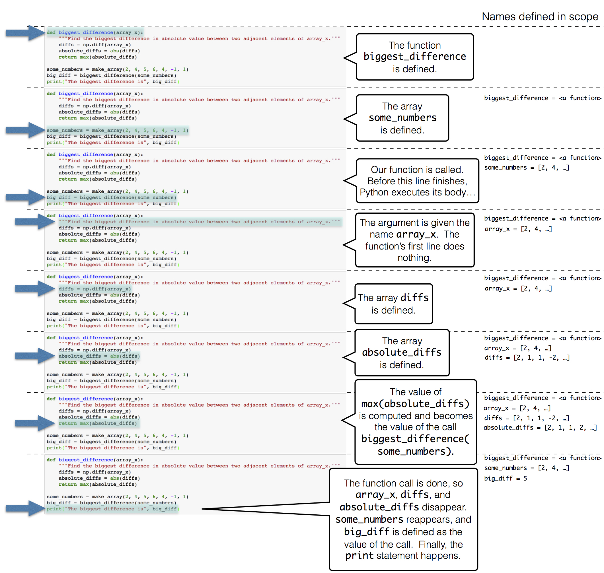

Functions and Tables#
We are building up a useful inventory of techniques for identifying patterns and themes in a data set by using functions already available in Python. We will now explore a core feature of the Python programming language: function definition.
We have used functions extensively already in this text, but never defined a function of our own. The purpose of defining a function is to give a name to a computational process that may be applied multiple times. There are many situations in computing that require repeated computation. For example, it is often the case that we want to perform the same manipulation on every value in a column of a table.
Defining a Function
The definition of the double function below simply doubles a number.
# Our first function definition
def double(x):
""" Double x """
return 2*x
We start any function definition by writing def. Here is a breakdown of the other parts (the syntax) of this small function:

When we run the cell above, no particular number is doubled, and the code inside the body of double is not yet evaluated. In this respect, our function is analogous to a recipe. Each time we follow the instructions in a recipe, we need to start with ingredients. Each time we want to use our function to double a number, we need to specify a number.
We can call double in exactly the same way we have called other functions. Each time we do that, the code in the body is executed, with the value of the argument given the name x.
double(17)
34
double(-0.6/4)
-0.3
The two expressions above are both call expressions. In the second one, the value of the expression -0.6/4 is computed and then passed as the argument named x to the double function. Each call expresson results in the body of double being executed, but with a different value of x.
The body of double has only a single line:
return 2*x
Executing this return statement completes execution of the double function’s body and computes the value of the call expression.
The argument to double can be any expression, as long as its value is a number. For example, it can be a name. The double function does not know or care how its argument is computed or stored; its only job is to execute its own body using the values of the arguments passed to it.
any_name = 42
double(any_name)
84
The argument can also be any value that can be doubled. For example, a whole array of numbers can be passed as an argument to double, and the result will be another array.
double(make_array(3, 4, 5))
array([ 6, 8, 10])
However, names that are defined inside a function, including arguments like double’s x, have only a fleeting existence. They are defined only while the function is being called, and they are only accessible inside the body of the function. We can’t refer to x outside the body of double. The technical terminology is that x has local scope.
Therefore the name x isn’t recognized outside the body of the function, even though we have called double in the cells above.
x
---------------------------------------------------------------------------
NameError Traceback (most recent call last)
<ipython-input-7-6fcf9dfbd479> in <module>
----> 1 x
NameError: name 'x' is not defined
Docstrings. Though double is relatively easy to understand, many functions perform complicated tasks and are difficult to use without explanation. (You may have discovered this yourself!) Therefore, a well-composed function has a name that evokes its behavior, as well as documentation. In Python, this is called a docstring — a description of its behavior and expectations about its arguments. The docstring can also show example calls to the function, where the call is preceded by >>>.
A docstring can be any string, as long as it is the first thing in a function’s body. Docstrings are typically defined using triple quotation marks at the start and end, which allows a string to span multiple lines. The first line is conventionally a complete but short description of the function, while following lines provide further guidance to future users of the function.
Here is a definition of a function called percent that takes two arguments. The definition includes a docstring.
# A function with more than one argument
def percent(x, total):
"""Convert x to a percentage of total.
More precisely, this function divides x by total,
multiplies the result by 100, and rounds the result
to two decimal places.
>>> percent(4, 16)
25.0
>>> percent(1, 6)
16.67
"""
return round((x/total)*100, 2)
percent(33, 200)
16.5
Contrast the function percent defined above with the function percents defined below. The latter takes an array as its argument, and converts all the numbers in the array to percents out of the total of the values in the array. The percents are all rounded to two decimal places, this time replacing round by np.round because the argument is an array and not a number.
def percents(counts):
"""Convert the values in array_x to percents out of the total of array_x."""
total = counts.sum()
return np.round((counts/total)*100, 2)
The function percents returns an array of percents that add up to 100 apart from rounding.
some_array = make_array(7, 10, 4)
percents(some_array)
array([33.33, 47.62, 19.05])
It is helpful to understand the steps Python takes to execute a function. To facilitate this, we have put a function definition and a call to that function in the same cell below.
def biggest_difference(array_x):
"""Find the biggest difference in absolute value between two adjacent elements of array_x."""
diffs = np.diff(array_x)
absolute_diffs = abs(diffs)
return max(absolute_diffs)
some_numbers = make_array(2, 4, 5, 6, 4, -1, 1)
big_diff = biggest_difference(some_numbers)
print("The biggest difference is", big_diff)
The biggest difference is 5
Here is what happens when we run that cell:

Multiple Arguments
There can be multiple ways to generalize an expression or block of code, and so a function can take multiple arguments that each determine different aspects of the result. For example, the percents function we defined previously rounded to two decimal places every time. The following two-argument definition allows different calls to round to different amounts.
def percents(counts, decimal_places):
"""Convert the values in array_x to percents out of the total of array_x."""
total = counts.sum()
return np.round((counts/total)*100, decimal_places)
parts = make_array(2, 1, 4)
print("Rounded to 1 decimal place: ", percents(parts, 1))
print("Rounded to 2 decimal places:", percents(parts, 2))
print("Rounded to 3 decimal places:", percents(parts, 3))
Rounded to 1 decimal place: [28.6 14.3 57.1]
Rounded to 2 decimal places: [28.57 14.29 57.14]
Rounded to 3 decimal places: [28.571 14.286 57.143]
The flexibility of this new definition comes at a small price: each time the function is called, the number of decimal places must be specified. Default argument values allow a function to be called with a variable number of arguments; any argument that isn’t specified in the call expression is given its default value, which is stated in the first line of the def statement. For example, in this final definition of percents, the optional argument decimal_places is given a default value of 2.
def percents(counts, decimal_places=2):
"""Convert the values in array_x to percents out of the total of array_x."""
total = counts.sum()
return np.round((counts/total)*100, decimal_places)
parts = make_array(2, 1, 4)
print("Rounded to 1 decimal place:", percents(parts, 1))
print("Rounded to the default number of decimal places:", percents(parts))
Rounded to 1 decimal place: [28.6 14.3 57.1]
Rounded to the default number of decimal places: [28.57 14.29 57.14]
Note: Methods
Functions are called by placing argument expressions in parentheses after the function name. Any function that is defined in isolation is called in this way. You have also seen examples of methods, which are like functions but are called using dot notation, such as some_table.sort(some_label). The functions that you define will always be called using the function name first, passing in all of the arguments.